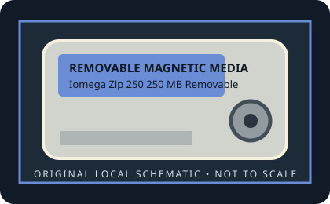

[ REMOVABLE MEDIA // MODEL-SPECIFIC RECORD ]
Iomega Zip 250 250 MB Removable Disk
Iomega Zip 250 media generation, introduced in 2001; 3.5-inch-class rigid cartridge. 250 MB nominal removable magnetic-disk capacity.

IDENTIFICATION: Verify the exact capacity, physical format, and generation printed on the medium. A cartridge has no host interface of its own; drive interface and system support must be checked against the exact reader model.
Format, capacity and compatibility
| Product / media model | Iomega Zip 250 250 MB Removable Disk |
|---|---|
| Generation / format | Iomega Zip 250 media generation, introduced in 2001; 3.5-inch-class rigid cartridge. |
| Capacity and medium | 250 MB nominal removable magnetic-disk capacity. |
| Media and drive interface | No electrical connection on the disk. Match to a Zip 250/750 drive and verify its actual USB, FireWire, parallel, IDE, or SCSI host interface and OS support. |
| Compatibility | Zip 250 disks work in compatible Zip 250 drives and Zip 750 drives. Zip 100 drives reject/eject 250 MB disks; Zip 250 drives can read/write Zip 100 disks. Interface is a drive property—Zip drives came in host-interface-specific internal and external versions. |
| Version and model caveat | Although the shells look similar, Zip 100 and Zip 250 media are not interchangeable in the lower-capacity Zip 100 drive. Never force a cartridge that the drive rejects. |
Handling and preservation
Keep the cartridge in its protective case, away from dust, moisture, heat, strong magnetic fields, and physical shock. Do not open a sealed cartridge or force it into a drive. For preservation, image read-only with a known-compatible mechanism, retain the source media, record the drive/interface used, and verify copied data with checksums.
- Photograph the label and shell before use; preserve packaging, write-protect state, and acquisition notes.
- Keep at least two independent verified copies of important data. A legacy removable cartridge by itself is not an archival strategy.
Model and generation notes
Although the shells look similar, Zip 100 and Zip 250 media are not interchangeable in the lower-capacity Zip 100 drive. Never force a cartridge that the drive rejects.
Storage capacity names and drive interface names describe different things: confirm the cartridge format/generation first, then check the exact reader model, host connector, controller, operating-system driver, and filesystem separately.
Sources and standards
- Museum of Obsolete Media — Iomega Zip 250Documents the 250 MB generation, introduction, drive-interface variants, Zip 100/250/750 media compatibility, and ejection behavior.
- Museum of Obsolete Media — Iomega Zip format historyProvides format-family context and explains higher-capacity drive support for lower-capacity media.
- Internet Archive — Iomega Zip 250 documentation searchSearches period drive manuals for cartridge recognition and generation compatibility.
Discontinued-media specifications are cross-checked against period product material and museum/archive documentation. Family-level history does not replace the exact drive manual for interchangeability.